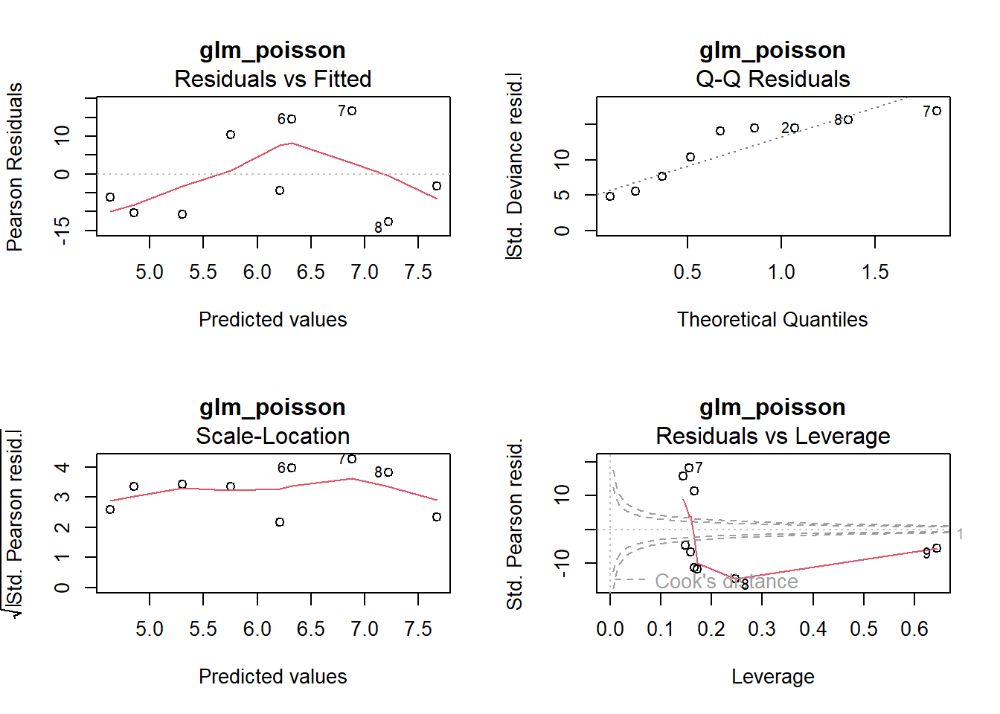
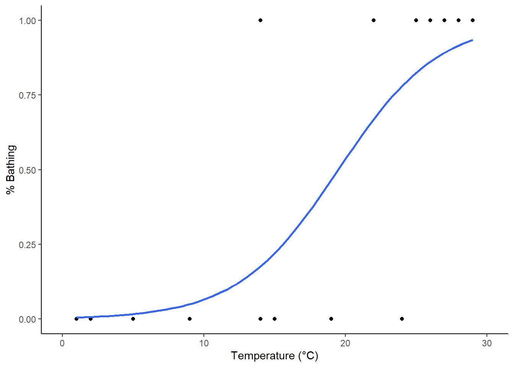

library("pacman")
p_load("tidyverse")
# Daten erstellen und anschauen
strand <- tibble(
Temperatur = c(10, 12, 16, 20, 24, 25, 30, 33, 37),
Besucher = c(40, 12, 50, 500, 400, 900, 1500, 900, 2000)
)
ggplot(strand, aes(x = Temperatur, y = Besucher)) +
geom_point() +
xlim(0, 40) +
theme_classic()Statistik 5: Demo
Demoscript herunterladen (.qmd)
von LMs zu GLMs
# Modell definieren und anschauen
lm_strand <- lm(Besucher ~ Temperatur, data = strand)
summary(lm_strand)
##
## Call:
## lm(formula = Besucher ~ Temperatur, data = strand)
##
## Residuals:
## Min 1Q Median 3Q Max
## -476.41 -176.89 55.59 218.82 353.11
##
## Coefficients:
## Estimate Std. Error t value Pr(>|t|)
## (Intercept) -855.01 290.54 -2.943 0.021625 *
## Temperatur 67.62 11.80 5.732 0.000712 ***
## ---
## Signif. codes: 0 '***' 0.001 '**' 0.01 '*' 0.05 '.' 0.1 ' ' 1
##
## Residual standard error: 311.7 on 7 degrees of freedom
## Multiple R-squared: 0.8244, Adjusted R-squared: 0.7993
## F-statistic: 32.86 on 1 and 7 DF, p-value: 0.0007115
# Modelvalidierung
par(mfrow = c(2, 2))
plot(lm_strand)ggplot(strand, aes(x = Temperatur, y = Besucher)) +
geom_point() +
xlim(0, 40) +
stat_smooth(method = "lm") +
theme_classic()
## `geom_smooth()` using formula = 'y ~ x'
# GLMs definieren und anschauen
# ist dasselbe wie ein LM
glm_gaussian <- glm(Besucher ~ Temperatur, family = "gaussian", data = strand)
# Poisson passt besser zu den Daten
glm_poisson <- glm(Besucher ~ Temperatur, family = "poisson", data = strand)
summary(glm_gaussian)
##
## Call:
## glm(formula = Besucher ~ Temperatur, family = "gaussian", data = strand)
##
## Coefficients:
## Estimate Std. Error t value Pr(>|t|)
## (Intercept) -855.01 290.54 -2.943 0.021625 *
## Temperatur 67.62 11.80 5.732 0.000712 ***
## ---
## Signif. codes: 0 '***' 0.001 '**' 0.01 '*' 0.05 '.' 0.1 ' ' 1
##
## (Dispersion parameter for gaussian family taken to be 97138.03)
##
## Null deviance: 3871444 on 8 degrees of freedom
## Residual deviance: 679966 on 7 degrees of freedom
## AIC: 132.63
##
## Number of Fisher Scoring iterations: 2
summary(glm_poisson)
##
## Call:
## glm(formula = Besucher ~ Temperatur, family = "poisson", data = strand)
##
## Coefficients:
## Estimate Std. Error z value Pr(>|z|)
## (Intercept) 3.500301 0.056920 61.49 <2e-16 ***
## Temperatur 0.112817 0.001821 61.97 <2e-16 ***
## ---
## Signif. codes: 0 '***' 0.001 '**' 0.01 '*' 0.05 '.' 0.1 ' ' 1
##
## (Dispersion parameter for poisson family taken to be 1)
##
## Null deviance: 6011.8 on 8 degrees of freedom
## Residual deviance: 1113.7 on 7 degrees of freedom
## AIC: 1185.1
##
## Number of Fisher Scoring iterations: 5Rücktranformation der Werte auf die orginale Skale (Hier Exponentialfunktion da family=possion als Link-Funktion den natürlichen Logarithmus (log) verwendet) Besucher = exp(3.50 + 0.11 Temperatur/°C)
# So kann man auf die Coefficients des Modells "extrahieren" und dann mit[] auswählen
glm_poisson$coefficients
## (Intercept) Temperatur
## 3.5003009 0.1128168
exp(glm_poisson$coefficients[1])# Anzahl besucher bei 0°C
## (Intercept)
## 33.12542
exp(glm_poisson$coefficients[1] + 30 * glm_poisson$coefficients[2]) # Anzahl besucher bei 30°C
## (Intercept)
## 977.3102
# Test Overdispersion
p_load("performance")
check_overdispersion(glm_poisson)
## # Overdispersion test
##
## dispersion ratio = 149.683
## Pearson's Chi-Squared = 1047.778
## p-value = < 0.001
## Overdispersion detected.-> Es liegt Overdispersion vor. Darum quasipoisson wählen.
glm_quasipoisson <- glm(Besucher ~ Temperatur, family = "quasipoisson", data = strand)
summary(glm_quasipoisson)
##
## Call:
## glm(formula = Besucher ~ Temperatur, family = "quasipoisson",
## data = strand)
##
## Coefficients:
## Estimate Std. Error t value Pr(>|t|)
## (Intercept) 3.50030 0.69639 5.026 0.00152 **
## Temperatur 0.11282 0.02227 5.065 0.00146 **
## ---
## Signif. codes: 0 '***' 0.001 '**' 0.01 '*' 0.05 '.' 0.1 ' ' 1
##
## (Dispersion parameter for quasipoisson family taken to be 149.6826)
##
## Null deviance: 6011.8 on 8 degrees of freedom
## Residual deviance: 1113.7 on 7 degrees of freedom
## AIC: NA
##
## Number of Fisher Scoring iterations: 5par(mfrow = c(2, 2))
plot(glm_gaussian, main = "glm_gaussian")par(mfrow = c(2, 2))
plot(glm_poisson, main = "glm_poisson")
par(mfrow = c(2, 2))
plot(glm_quasipoisson, main = "glm_quasipoisson")
-> Die Outputs von glm_poisson und glm_quasipoisson sind bis auf die p-Werte identisch.
ggplot(data = strand, aes(x = Temperatur, y = Besucher)) +
geom_point() +
xlim(0, 40) +
stat_smooth(method = "lm", color = "blue") +
stat_smooth(method = "glm", method.args = list(family = "poisson"),
color = "red", se = FALSE) +
stat_smooth(method = "glm", method.args = list(family = "quasipoisson"),
color = "green", linetype = "dashed", se = FALSE) +
theme_classic()
## `geom_smooth()` using formula = 'y ~ x'
## `geom_smooth()` using formula = 'y ~ x'
## `geom_smooth()` using formula = 'y ~ x'
Logistische Regression
bathing <- tibble(
temperatur = c(1, 2, 5, 9, 14, 14, 15, 19, 22, 24, 25, 26, 27, 28, 29),
badend = c(0, 0, 0, 0, 0, 1, 0, 0, 1, 0, 1, 1, 1, 1, 1)
)
ggplot(bathing, aes(x = temperatur, y = badend)) +
geom_point() +
xlim(0, 30) +
theme_classic()
# Logistisches Modell definieren
glm_logistic <- glm(badend ~ temperatur, family = "binomial", data = bathing)
summary(glm_logistic)
##
## Call:
## glm(formula = badend ~ temperatur, family = "binomial", data = bathing)
##
## Coefficients:
## Estimate Std. Error z value Pr(>|z|)
## (Intercept) -5.4652 2.8501 -1.918 0.0552 .
## temperatur 0.2805 0.1350 2.077 0.0378 *
## ---
## Signif. codes: 0 '***' 0.001 '**' 0.01 '*' 0.05 '.' 0.1 ' ' 1
##
## (Dispersion parameter for binomial family taken to be 1)
##
## Null deviance: 20.728 on 14 degrees of freedom
## Residual deviance: 10.829 on 13 degrees of freedom
## AIC: 14.829
##
## Number of Fisher Scoring iterations: 6
glm_logistic
##
## Call: glm(formula = badend ~ temperatur, family = "binomial", data = bathing)
##
## Coefficients:
## (Intercept) temperatur
## -5.4652 0.2805
##
## Degrees of Freedom: 14 Total (i.e. Null); 13 Residual
## Null Deviance: 20.73
## Residual Deviance: 10.83 AIC: 14.83
# Test Overdispersion
check_overdispersion(glm_logistic)
## # Overdispersion test
##
## dispersion ratio = 1.120
## p-value = 0.808
## No overdispersion detected.
# Modeldiagnostik (wenn nicht signifikant, dann OK)
1 - pchisq(glm_logistic$deviance, glm_logistic$df.resid)
## [1] 0.6251679
# Using function "check_model"
check_model(glm_logistic)
# Modellgüte (pseudo-R²)
r2(glm_logistic)
## # R2 for Logistic Regression
## Tjur's R2: 0.538
# Steilheit der Beziehung (relative Änderung der odds bei x + 1 vs. x)
exp(glm_logistic$coefficients[2])
## temperatur
## 1.323807
# LD50 (also hier: Temperatur, bei der 50% der Touristen baden)
-glm_logistic$coefficients[1] / glm_logistic$coefficients[2]
## (Intercept)
## 19.48311
# oder
p_load(MASS)
dose.p(glm_logistic, p = 0.5)
## Dose SE
## p = 0.5: 19.48311 2.779485
# Vorhersagen
predicted <- predict(glm_logistic, type = "response")
# Konfusionsmatrix
km <- table(bathing$badend, predicted > 0.5)
km
##
## FALSE TRUE
## 0 7 1
## 1 1 6
# Missklassifizierungsrate
1 - sum(diag(km) / sum(km))
## [1] 0.1333333
# Plotting
ggplot(data = bathing, aes(x = temperatur, y = badend)) +
geom_point() +
xlim(0, 30) +
labs(x = "Temperature (°C)", y = "% Bathing") +
stat_smooth(method = "glm", method.args = list(family = "binomial")) +
theme_classic()
## `geom_smooth()` using formula = 'y ~ x'Binominale Regression
p_load(doBy)
?budworm
## starting httpd help server ... done
data(budworm)
str(budworm)
## 'data.frame': 12 obs. of 4 variables:
## $ sex : Factor w/ 2 levels "female","male": 2 2 2 2 2 2 1 1 1 1 ...
## $ dose : int 1 2 4 8 16 32 1 2 4 8 ...
## $ ndead : int 1 4 9 13 18 20 0 2 6 10 ...
## $ ntotal: int 20 20 20 20 20 20 20 20 20 20 ...
summary(budworm)
## sex dose ndead ntotal
## female:6 Min. : 1.0 Min. : 0.00 Min. :20
## male :6 1st Qu.: 2.0 1st Qu.: 3.50 1st Qu.:20
## Median : 6.0 Median : 9.50 Median :20
## Mean :10.5 Mean : 9.25 Mean :20
## 3rd Qu.:16.0 3rd Qu.:13.75 3rd Qu.:20
## Max. :32.0 Max. :20.00 Max. :20Die Insektiziddosen wurden als Zweierpotenzen gewählt (d.h. jede Dosis ist doppelt so hoch wie die vorhergehende Dosis). Da wir von einer multiplikativen Wirkung der Dosis ausgehen, ist es vorteilhaft, die Werte mit einem Logarithmus mit Basis 2 zu logarithmieren.
budworm$ldose <- log2(budworm$dose)
# Das Modell kann auf zwei verschiedene Varianten spezifiziert werden
glm_binomial <- glm( cbind( ndead, ntotal-ndead) ~ ldose*sex, family = binomial, data = budworm)
glm_binom <- glm(ndead/ntotal ~ ldose*sex, family = binomial, weights = ntotal, data = budworm)
coef(glm_binomial)
## (Intercept) ldose sexmale ldose:sexmale
## -2.9935418 0.9060364 0.1749868 0.3529130
coef(glm_binom)
## (Intercept) ldose sexmale ldose:sexmale
## -2.9935418 0.9060364 0.1749868 0.3529130
# Das Resultat ist identisch
# Model optimierung
drop1(glm_binomial, test = "Chisq")
## Single term deletions
##
## Model:
## cbind(ndead, ntotal - ndead) ~ ldose * sex
## Df Deviance AIC LRT Pr(>Chi)
## <none> 4.9937 43.104
## ldose:sex 1 6.7571 42.867 1.7633 0.1842
glm_binomial_2 <- update( glm_binomial, .~.-sex:ldose)
drop1(glm_binomial_2, test = "Chisq")
## Single term deletions
##
## Model:
## cbind(ndead, ntotal - ndead) ~ ldose + sex
## Df Deviance AIC LRT Pr(>Chi)
## <none> 6.757 42.867
## ldose 1 118.799 152.909 112.042 < 2.2e-16 ***
## sex 1 16.984 51.094 10.227 0.001384 **
## ---
## Signif. codes: 0 '***' 0.001 '**' 0.01 '*' 0.05 '.' 0.1 ' ' 1
# Validate Model
check_overdispersion(glm_binomial_2)
## # Overdispersion test
##
## dispersion ratio = 0.929
## p-value = 0.592
## No overdispersion detected.
check_model(glm_binomial_2)
# Resultat udn Visualisierung
summary(glm_binomial_2)
##
## Call:
## glm(formula = cbind(ndead, ntotal - ndead) ~ ldose + sex, family = binomial,
## data = budworm)
##
## Coefficients:
## Estimate Std. Error z value Pr(>|z|)
## (Intercept) -3.4732 0.4685 -7.413 1.23e-13 ***
## ldose 1.0642 0.1311 8.119 4.70e-16 ***
## sexmale 1.1007 0.3558 3.093 0.00198 **
## ---
## Signif. codes: 0 '***' 0.001 '**' 0.01 '*' 0.05 '.' 0.1 ' ' 1
##
## (Dispersion parameter for binomial family taken to be 1)
##
## Null deviance: 124.8756 on 11 degrees of freedom
## Residual deviance: 6.7571 on 9 degrees of freedom
## AIC: 42.867
##
## Number of Fisher Scoring iterations: 4
# ld 50 Female (cf = c(1, 3) = Intercept und dosis)
( ld50_feamle <- dose.p(glm_binomial_2, cf = c(1, 3)) )
## Dose SE
## p = 0.5: 3.155282 0.8409467
# Zurücktransformieren
2^ld50_feamle
## Dose SE
## p = 0.5: 8.909112 0.8409467
# ld 50 male
# dose.p(glm_binomial_2, cf = c(1, 2, 3))
# funktioniert nicht wir müssen es manuell ausrechnen
ld50_male <- -(glm_binomial_2$coefficients[1] + glm_binomial_2$coefficients[2] ) / glm_binomial_2$coefficients[3]
# Zurücktransformieren
2^ld50_male
## (Intercept)
## 4.558211
# Männliche Tiere reagieren wesentlich empfindlicher auf das Insektizid
# Visualisierung
ggplot(budworm, aes(x = ldose, y = ndead / 20, color = sex)) +
geom_point() +
geom_smooth(method = "glm", method.args = list(family = "binomial"), se = FALSE) +
labs(x = "log2(dose)", y = "probability dead") +
theme_classic()
## `geom_smooth()` using formula = 'y ~ x'
## Warning in eval(family$initialize): non-integer #successes in a binomial glm!
## Warning in eval(family$initialize): non-integer #successes in a binomial glm!